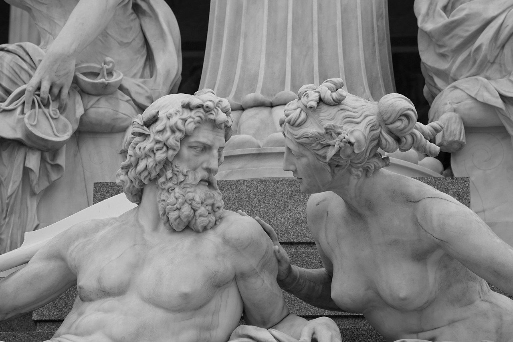

Zeus
"The King of the Gods"
Zeus, the indomitable king of the Greek gods, commands Mount Olympus with unparalleled might and authority. Revered as the god of the sky, thunder, and lightning, Zeus is a majestic and awe-inspiring figure in Greek mythology. With his iconic thunderbolt in hand, he asserts dominion over the cosmos, dispenses justice, and presides over the intricate tapestry of mortal and divine affairs. As the father of gods and men, Zeus wields both benevolence and wrath, embodying the dual nature of the ancient Greek pantheon. His numerous myths showcase a complex personality, from amorous escapades to decisive interventions in epic conflicts. Zeus remains an enduring symbol of power, governance, and the omnipotent forces that shape the very fabric of the mythological universe.

Poseidon
"The God of the Sea"
Poseidon, the mighty god of the sea, earthquakes, and horses, reigns supreme as a formidable figure in Greek mythology. Brother to Zeus and Hades, Poseidon commands the vast depths of the oceans with a trident, symbolizing his dominion over the waters. Often depicted with a mercurial temperament, Poseidon's influence extends beyond the sea, as earthquakes are said to be the result of his wrath. As the creator of horses and a patron of sailors, he holds a significant role in the lives of mortals, both as a benevolent provider and a powerful enforcer of his will. The myths surrounding Poseidon encapsulate a dynamic deity whose waves of influence ripple through the diverse realms he governs, leaving an indelible mark on the tapestry of Greek mythology.

Hades
"The God of the Underworld"
Hades, the enigmatic god of the underworld, casts a shadowy presence within the pantheon of Greek mythology. As the brother of Zeus and Poseidon, Hades presides over the realm of the dead, ensuring the order and balance of the afterlife. Often depicted as a somber and solitary figure, he holds a key role in the intricate cycle of life and death. Though commonly associated with the underworld, Hades is not solely a harbinger of doom; his role as the god of wealth and the unseen forces that govern existence reveals a nuanced character. Hades remains a mysterious and essential deity, overseeing the domain of departed souls with a stern but necessary authority, making him an integral part of the rich and complex tapestry of Greek myth.